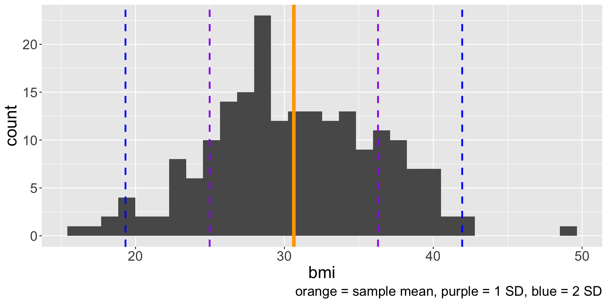
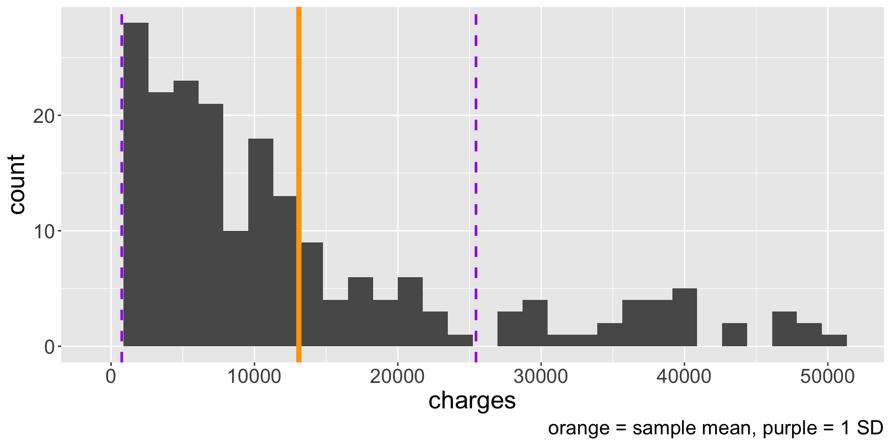
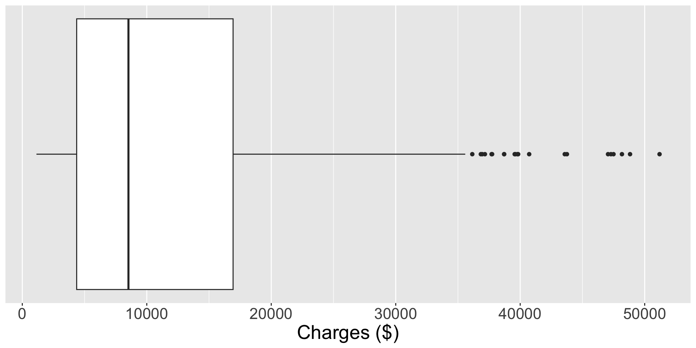
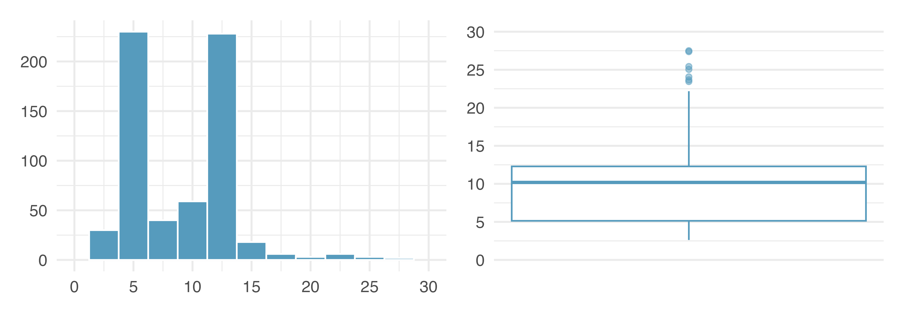
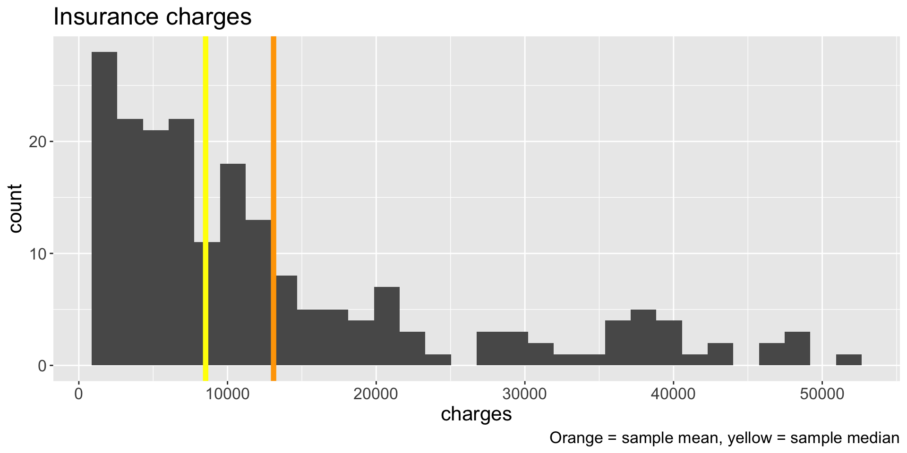

Visualization and summary statistics (part 2)
2025-09-17
We learned about the sample mean \(\bar{x}\), the sample variance \(s^2 = \frac{1}{n-1} \sum_{i=1}^{n} (x_{i} - \bar{x})^2\), and the sample standard deviation \(s = \sqrt{s^2}\)
Why care about standard deviation (SD)? Describes how far data are distributed from their mean
Usually (but not always!!) about 70% of the data will be within one SD of the mean, and 95% will be within two SDs
These percentages are not precise, but are useful for intuition
We will come back to this later in semester


We know how to calculate some summary statistics and interpret them alongside the histogram. But wouldn’t it be great if we had a visualization that directly displays some summary statistics?
Another commonly used visualization to display the distribution of a numerical variable is the boxplot. Boxplots are created using five statistics and identify unusual observations.

The (sample) median \(m\) is another common measure of center of a distribution. It is the value of the data distribution where 50% of the data are less than \(m\) and 50% of the data are greater than \(m\).
Consider the following data: \(\boldsymbol{x} =108,112,113, 114, 115, 116, 118, 119, 121, 129\). What is the median?
The median is also known the 50th percentile because 50% of the data fall below \(m\)
Code in R: median(x) where \(x\) is a vector
The 25th percentile is the value of data with 25% of values below it. Special name: first quartile \(Q_{1}\)
The 75th percentile is the value of data with 75% of values below it. Special name: third quartile \(Q_{3}\)
What percent of the data fall between \(Q_{1}\) and \(Q_{3}\)? What percent of the data fall between \(Q_{1}\) and the median?
How to calculate? Suppose we have \(2q\) (even) or \(2q + 1\) (odd) number of values
\(Q_{1}\) is the median of the \(q\) smallest values
\(Q_{3}\) is the median of the \(q\) largest values
What are \(Q_{1}\) and \(Q_{3}\) of the data \(\boldsymbol{x} = 108,112,113, 114, 115, 116, 118, 119, 121, 129\)?
The interquartile range (IQR) is another measure of variability/spread in the data.
\[ IQR = Q_{3} - Q_{1} \]
The “box” part of the boxplot is created using \(Q_{1}\), \(m\), and \(Q_{3}\)
Draw whiskers from the box that attempt to capture data outside the IQR
Lastly, we add dots for any cases that lie beyond the whiskers
These points are unusually high/low compared to the rest of the data and are worth identifying as potential outliers
An outlier is an observation that appears extreme relative to the rest of the data
Let’s draw a boxplot for the data \(\boldsymbol{x}\)!
Why are we interested in identifying outliers?
Identifying strong skew
Identifying possible data collection/data entry errors
Providing insight into interesting properties of the data
What characteristics of the distribution are apparent in the histogram and not in the box plot? What characteristics are apparent in the box plot but not in the histogram?

\(\qquad \bar{x} =\) 116.5, \(s =\) 5.8, \(m =\) 115.5 , \(IQR =\) 6
Suppose we actually observed an additional data point with a value of \(170\). What are the sample statistics with this additional data point? How do they compare to the values above?
\(\bar{x}' =\) 121.4, \(s' =\) 17.03, \(m' =\) _____, \(IQR' =\) _____
Robust statistics are statistics that are minimally affected by extreme values
When should the mean be similar to the median (and the standard deviation similar to the IQR)?

Which is better measure of center? The mean or the median?
Boxplots are another univariate visualization for numerical data
Median and IQR are robust to outliers, whereas mean and standard deviation are sensitive to outliers
When should we prefer median over mean (or vice versa)?